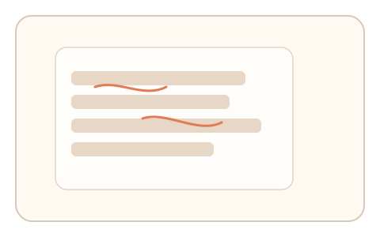
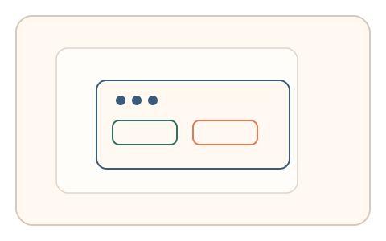

#111
Morphological Analysis - Combination Batches
已扩展
意图热区复核
任务完成后异步提示“刚才最关注的区域”，以点击热区与搜索路径一致性验证真实性。
概念原文
用户完成任务后异步提示“刚才最关注的区域”，系统以点击热区与搜索路径的异常检测判定意图一致性。任务结构为异步验证，信号形态为注意力分布。
验证“意图‑注意力”一致性而非答案对错。
研究背景
真实用户在任务中会形成明确的关注热区，热区复核可检验意图‑注意力一致性。脚本难以在跨时上下文中保持自然的注意力分布。
核心机制
- 记录用户在任务中的注意力与搜索路径。
- 异步提示用户指出刚才最关注的区域。
- 记录点击热区与路径一致性。
- 与群体分布进行比对判定。
用户流程
- 步骤 1：用户完成主要任务。
- 步骤 2：异步提示点击关注区域。
- 步骤 3：系统比较热区与路径一致性。
判定信号
热区一致性
真实用户的关注区域与路径存在稳定关联。
反应时与停顿
在场用户更容易快速回忆关注区域。
判定逻辑
热区位置与路径一致性需落在人类分布区间；随机点击或过度精准判异常。
对抗面
- 脚本直接读取路径并固定点击
- 重放真实用户的热区序列
防御与缓解
- 随机化异步时机与提示方式
- 绑定上下文与任务参数
- 叠加反应时与轨迹信号
可达性与风险
提供可跳过选项与简化提示，避免打断体验。
- 异步提示可能影响体验
- 用户注意力分散导致误判
可视化状态

状态 1：任务完成
记录用户的注意力路径。

状态 2：热区复核
提示点击关注区域。

状态 3：一致判定
比较热区与路径一致性。
参考资料
Attention
说明注意力分布与热区形成。
Visual search
说明搜索路径与关注区域关系。